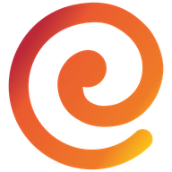

Diriger une entreprise en difficulté pèse aussi sur la santé. Ces questionnaires, utilisés par les médecins et les psychologues, vous aident à y voir plus clair en quelques minutes. Gratuit, anonyme, résultat immédiat.

Ces auto-évaluations vous permettront de savoir :Évalue les signes de déprime ou de dépression ressentis au cours des deux dernières semaines.
Mesure l'intensité de l'anxiété et des inquiétudes ressenties au cours des deux dernières semaines.
Évalue votre niveau de dépendance à la cigarette, souvent renforcée en période de tension.
Vos réponses ne sont ni enregistrées ni transmises : le calcul se fait uniquement dans votre navigateur. Ces questionnaires sont des outils d'auto-évaluation et ne remplacent pas l'avis d'un médecin ou d'un psychologue.